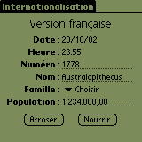
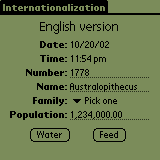
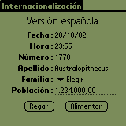

 Objective Objective
To be able to internationalize and localize an application.
 Concepts Concepts
Internationalization
Your app should be international. That means anybody in
any country should be able to use it. The most typical example is
the way you will display or input dates
and times. "Mon Dec 22, 1964 0700pm" in the US
should be formated as "Lun 22 Déc 1964 19h00" in
France.
Localization
Your app must be international. Alright. Well... that's what the
theory says. Throughout all the countries, there's a limited number
of ways to display a date. So, adapting your app to display dates
in any country is something feasible. On the other hand, as you
can imagine, it will be extremely time-consuming to translate your
app in all the languages that are used on Earth. First, you need
to translate all the content. Second, you'll have to deal with lots
of character sets. Third, QA and maintenance costs will sharply
increase.
Theory is good, but common sense... makes sense! You need to choose
a subset of languages amongst the ones that are most widely
used.
Comment faire? (How to...)
PilRC uses the TRANSLATION clause to isolate language-specific
content. In i18n.rcp, there is something like this in MainForm:
LABEL "English version" AUTOID AT (CENTER 20)
FONT 2
If you look a bit above, you'll find this:
TRANSLATION "FRENCH"
BEGIN
"English version" = "Version française"
...
END
And that:
TRANSLATION "SPANISH"
BEGIN
"English version" = "Versión española"
...
END
In other words (pun intended), the content that's initially in
English is translated into French, and put together in its own section.
Same for Spanish. Do we need to add Finnish? Cool! Just open a new
section like TRANSLATION "FINNISH"
that'll contain the finnish version.
As you noticed, we do not actually translate the form directly.
Rather, we declare a local version of labels that appear in the
form. How do we get a localized .prc from there?
Good question... Thanks for asking :)
We'll tell PilRC what TRANSLATION to use by adding the -L flag.
Also, we'll tell him in what directory it should store binary and
temporary files, so that the make doesn't get confused by mixing
languages. Here's how we ask PilRC to compile the Spanish version
and put it in folder "sp":
pilrc -L SPANISH i18n.rcp sp
 Exercise Exercise
Download the ZIP file.
This app shows a simple form with a date, a time, a number, a string,
a popup trigger and a number with separators for thousands and decimals.
We will internationalize our app for date, time and number formats
and localize it in English, Spanish and French.
In i18n.h:
- define DateFormatString as 1000
- define TimeFormatString as... well... it's up to you
- define ThousandString
- define DecimalString
In i18n.rcp:
- in the English version, add "AboutAlertMessage"
= "This is a demonstration of internationalization for PalmOS.\n"
- also in English, add "Thousand"
which equals "," and "Decimal"
which equals "."
- in French, add "Time: " = "Heure
: " and "Number: "
= "Numéro : "
- same language, "AboutAlertMessage" = "Cette
application est une demonstration du procédé d'internationalisation
pour PalmOS.\n"
- also in French, Thousand and Decimal equal "."
and "," respectively
- in Spanish, "Time: " translates
to "Hora : " and "Number:
" to "Número : "
- same language, "AboutAlertMessage" = "Esta
aplicación es una demostración del proceso de internacionalización
para plataforma Palm.\n"
- Thousand and Decimal must be like in French
- after the last alert box, add the following literals:
STRING DateFormatString "DateFormat"
STRING TimeFormatString "TimeFormat"
STRING ThousandString "Thousand"
STRING DecimalString "Decimal"
In i18n.c:
- add those globals:
DateFormatType gDateFormat;
TimeFormatType gTimeFormat;
Char gThousand;
Char gDecimal;
- get current date and time: TimSecondsToDateTime(TimGetSeconds(),
&dt);
- get a local version of date: DateToAscii(dt.month,
dt.day, dt.year, gDateFormat, str);
- same for time: TimeToAscii(dt.hour, dt.minute,
gTimeFormat, str);
- same for number: StrLocalizeNumber(str,
gThousand, gDecimal)
- in AppStart(), get time format the same way we got date format
(using TimeFormatString)
- get decimal separator like we got thousand separator (using
DecimalString)
Make the app and test it in all three languages! (The Makefile will
generate 3 .prc's - one for each language)
 Solution Solution
Here's the ZIP file.
And here's how the app should like:
 
Next topic 
|